Plus Seven
A 1v1 card-arena fighter where you are the director: you see who your rival casts, cast your own fighter from a hand of three cards, and call the cut of the stage before every take. Two of us built it in four days, each working with an AI model that did a large share of the typing. This is how it went, including the parts that went wrong.
- Team
- Sellennia Studios (2 people)
- Engine
- Unreal Engine 5.5, C++
- When
- 12 to 16 November 2026
- AI
- Claude Fable 5.2 with Opus 5.5 agents, GPT-6 Astra
The idea
The theme was "Director's Cut". We took it literally. The fight is the scene, but the decisions that win the match are made in the director's chair, before anyone swings a sword.
Each side holds three fighter cards: Balanced, Fast and Heavy. The AI reveals its card first. You answer with one of yours and then choose how the stage is cut for this take: OPEN, with room to run, or NARROW, where walls close in. A card can be played once per match, and the first side to win two takes wins. That one rule is what makes casting a real choice: do you spend your best fighter now, or keep it for the last take?
Everything else in the presentation follows from the same idea. Rounds are "takes". The title screen is a clapperboard. The pause menu says "CUT! Hold the roll". The credits are a strip of film.
Who did what
Barış Berk Şengül
Arenas, interface and match flow: the three sets, the OPEN and NARROW stage variants, every menu and HUD element, the card system and the rules of a match. Worked with Claude Fable 5.2 in Claude Code, which orchestrated Opus 5.5 agents for the large pieces.
Salih Özgür Seçen
Characters and combat: the three fighters, their weapons and animations, combos, guarding and dodging, the special abilities and the rival AI. Worked with OpenAI's GPT-6 Astra.
We split the repository the same way. Each of us had a branch and a set of files the other did not touch, and Özgür's branch was merged into the arena branch every time he pushed. Because nobody edited the other's files, none of those merges ever conflicted.
This log is written from the arena and interface side of the project. Özgür's combat work, and how he used GPT-6 Astra for it, is described here only as far as the commit history shows it.
How we used AI
Two people, two different AI setups, one repository. Özgür built characters and combat with OpenAI's GPT-6 Astra. On the arena and interface side, almost all code was written by Claude models working inside the project folder through Claude Code, directed and reviewed by Barış.
That side was an orchestration rather than a single assistant. Claude Fable 5.2 held the conversation, the plan and the project's history. Large, self-contained jobs were handed to Claude Opus 5.5 agents with a written brief: what to build, which folders belong to the other teammate and must not be touched, and whether the editor was open or closed. Small fixes Fable made directly.
The agents were not only writing C++. Through an open-source editor plugin (EngineWire, a Model Context Protocol bridge for Unreal) they could run Python scripts in the editor, start a play session, drive a match by script and take a screenshot of the result. So one turn of the loop looked like this:
Ask in plain language
"The pause menu is missing, design a good one." "Meteors should fall from the sky now and then, and director's chairs too."
The agent writes and compiles
C++ for gameplay and UI, Python for anything that touches a level. It builds the project itself and reads the compiler errors.
It plays the game and looks
It starts a session in the editor, pushes the match into the right state by script, takes a screenshot and inspects it. Overflowing text, a clipped button or a camera hidden behind a wall got caught here.
It reports what it did not verify
Every change came back with a list of what had been checked and what had only been compiled. A person then played the build.
Working rules we ended up with
- The interface is code, not assets. Every screen is built in C++ from one shared style (palette, fonts, sizes). There is not a single widget Blueprint in the project. That made the whole UI something an agent can read, change and diff.
- Levels are built by script. The three arenas come out of one Python builder with a theme and a layout each (a lane, a ring and an hourglass). Rebuilding a map is running a script, not hand-placing actors.
- Briefs name what not to touch. Every job handed to an Opus agent listed the folders that belonged to the other teammate. An agent that "helpfully" tidies someone else's file is how merges break.
- A handoff note between sessions. The agent does not remember yesterday. At the end of a session it wrote down the state of the project, the decisions that were made, and what had never been tested by hand, and the next session started by reading it.
- Small sounds are generated, not recorded. Menu clicks, the clapper, stingers and both music loops are synthesised by a Python script. The three weapon hit sounds are Özgür's.
- The person decides. What the game is, what a feature should feel like and whether it is good enough were never the agent's call.
A match that can be won
We started from Unreal's Third Person template. By the evening there was a complete match loop with nothing pretty in it: a card screen with letters instead of portraits, a countdown, a grey mannequin in a wooden arena, a round result and a match result. The stage director that switches a set between OPEN and NARROW was in from the first day, because the theme depended on it.
Getting the flow right before any art existed turned out to be the best decision of the jam. For the next three days every new fighter, effect and map dropped into a game that already had a beginning and an end.

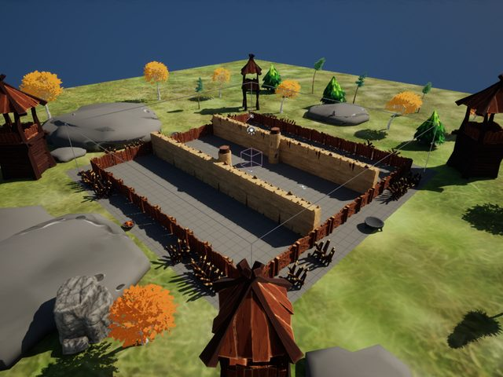

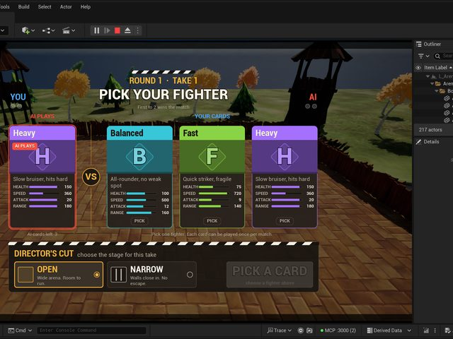

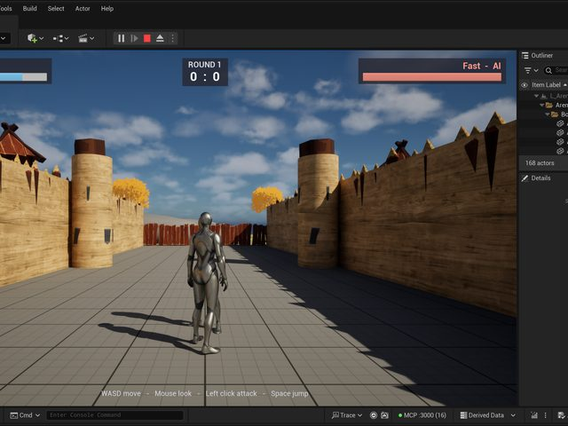
Fighters, two more sets and a title
Özgür's first big push landed just after midnight: the Balanced, Fast and Heavy fighters with their weapons and animations, followed later by combos, knockback and hit effects. On the arena side the builder got two more themes, a forest clearing and a village square, and a set selection screen to choose between them. Each set has its own NARROW cut: a long lane in the stockade, a ring of boulders in the forest, barricades of carts and crates in the village.
The cards needed faces. Instead of drawing them, the agent wrote a small "portrait studio": a script that puts each fighter in an empty level in front of a coloured backdrop, photographs it and imports the picture as card art.

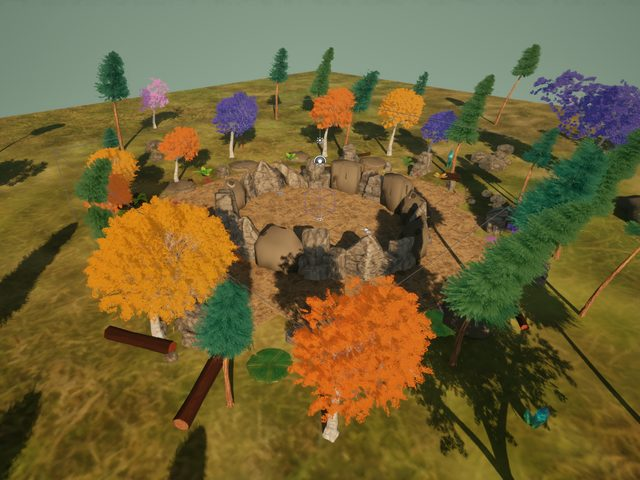

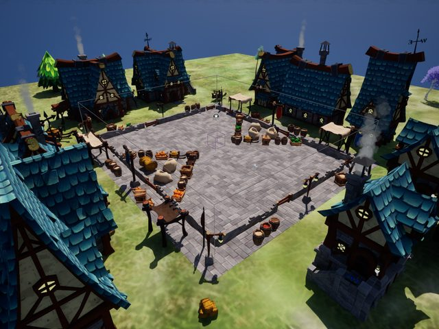

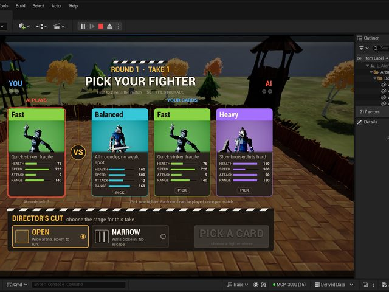

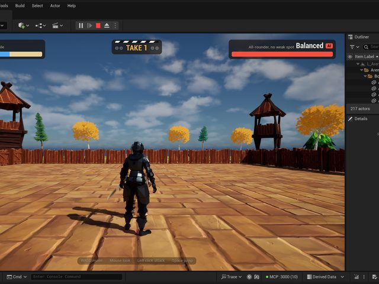
Making hits feel like hits
The third day belonged to combat. Özgür added directional guarding, the Balanced fighter's shield, aiming for the ninja's shuriken, dodging, and more of the feedback that makes a hit read. On the other branch the work was integration: merge, build, play a match, repeat.

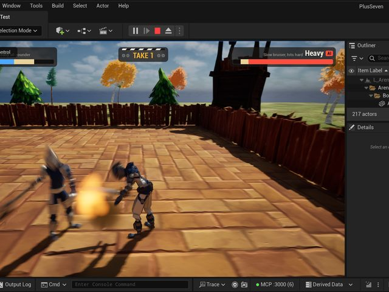
Everything that makes it a game
The last day was long. Special abilities arrived (Shield Breaker, Shadow Storm, Earthshaker) along with the ninja's Shadow Step. Sound went in: hits, menu sounds, stingers and two music loops. Then, in one evening on the interface side:
- Sky hazards. Every few seconds during a fight a flaming meteor or a flaming director's chair falls into the arena and hurts whoever stands too close. There was no chair model in the project, so the chair is assembled in code out of stretched cubes: crossed wooden legs, a red canvas seat and back.
- A pause menu that stops the shoot, shows the set, the take and the score, and lets you resume, restart or change set.
- Settings with master, music and sound-effect sliders that are saved between sessions.
- Credits as a strip of film with running perforations.

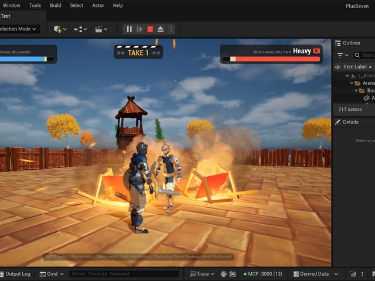

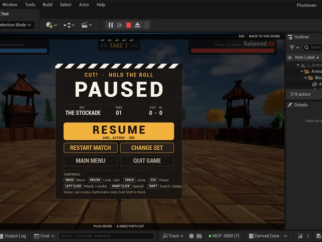

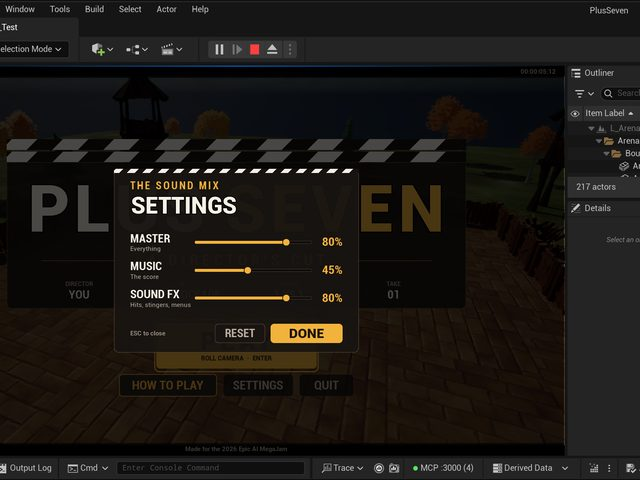

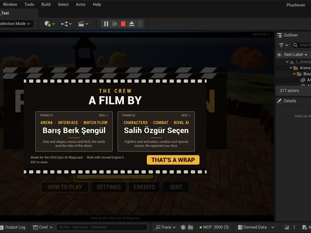
What went wrong
A dev log that only lists features is an advert. These are the problems that cost us time, most of them found in the last twelve hours.
The first packaged build had no effects
Everything worked in the editor. In the packaged game the hit effects were simply gone. The code loaded its particle effects by path, and Unreal only packages what something refers to directly, so the effects were never included. The fix was one line in the packaging settings. The lesson was to package on day one, not day four.
The camera went through walls
On the NARROW stage the camera slid inside fences and boulders, which turned the screen black or hid both fighters. The arena builder had deliberately made walls invisible to the camera so it would not jump around. The fix makes everything that blocks a fighter block the camera too, applied when a level starts, so no map had to be rebuilt.
The agent could not take action shots
The plan was for the agent to capture the store screenshots itself. Menus worked. Fights did not: on the development laptop the game ran at about three frames per second inside the editor, far too slow to freeze the right moment. The action shots on the store page are frames from a real gameplay recording instead.
An agent's "done" is not "tested"
Code that compiles and looks right in one screenshot can still be wrong when a person holds the mouse. Text overflowed its box, the test player was beaten while a script was still waiting, a button label was the same colour as its button. Having the agent say plainly what it had not checked mattered more than any single feature.
Where it ended up
Three sets, each with two cuts. Three fighters with a combo, a guard or dodge and a special ability each. An opponent that plays its cards and fights back. A match that starts on a clapperboard and ends on one.

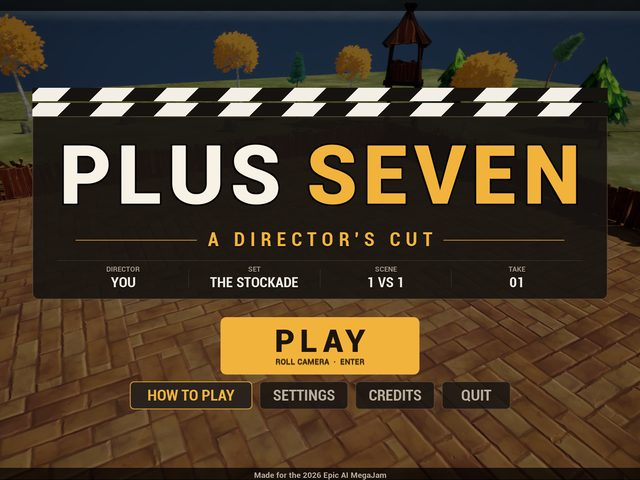

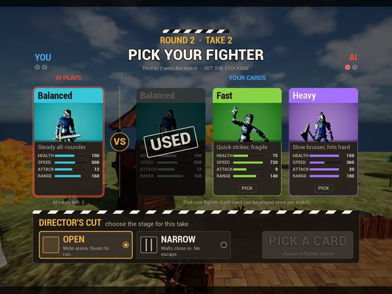

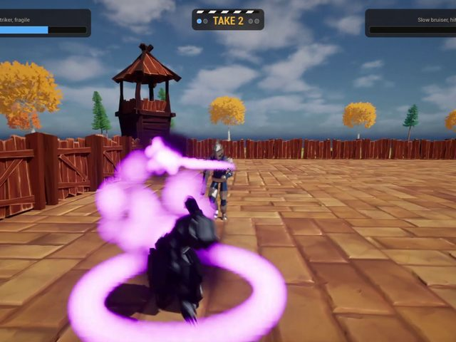

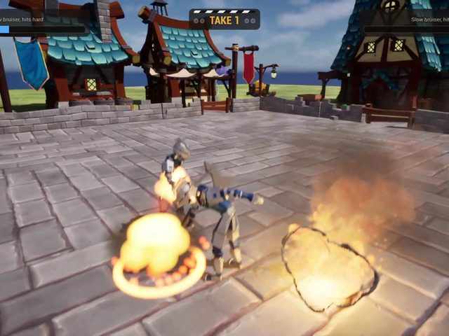

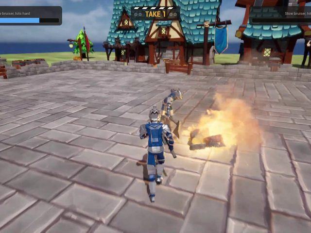

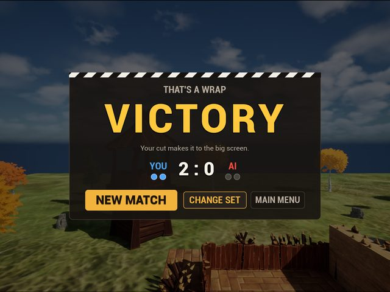
Tools
- Unreal Engine 5.5 (C++, UMG and Slate built in code, Niagara and Cascade, Lumen)
- Claude Code with Claude Fable 5.2 as orchestrator and Claude Opus 5.5 agents for large tasks (arena, interface, match flow)
- OpenAI GPT-6 Astra (characters, combat, rival AI)
- EngineWire, an open-source Model Context Protocol plugin that connects an agent to the Unreal editor
- Python for the arena builder, the portrait studio and the sound generator
- Asset packs from Fab for the environments and effects, plus Unreal's Starter Content
- Git with Git LFS, OBS and ffmpeg for the video
This page was written by Claude Fable 5.2 from the project's commit history and its own session notes.